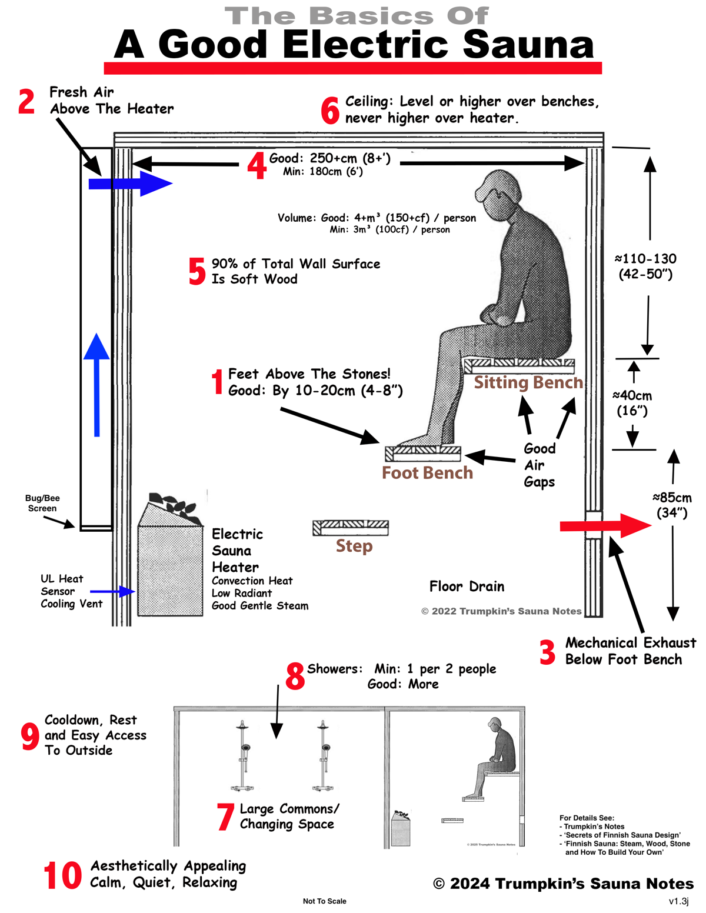
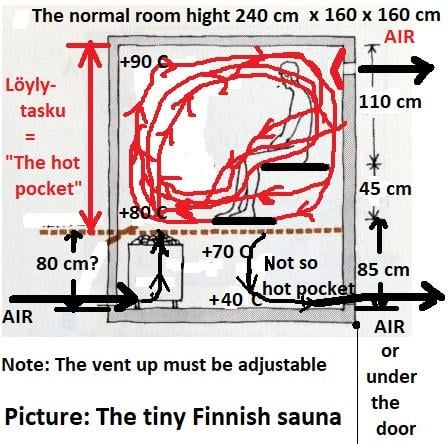

Thermal Hormesis & Proteostasis: Finnish Sauna, Far-Infrared (FIR), and Hot Water Immersion (HWI)
Pillar: Biophysical Hardware & Protein Chaperoning
Conviction Tier: CORE BET
Evidence Grade: E3 (Kuopio KIHD Cohort) / E2 (Hemodynamic Biomarkers) / E1 (Human Hyperthermia RCTs)
Stance: Consensus-Supported (Exceptional epidemiological and mechanistic alignment)
Estimated Monthly Cost: $40 -- $60 / month (amortized home FIR or Finnish sauna)
Primary Target Hallmark: Loss of Proteostasis & Mitochondrial Dysfunction
1. Biophysical & Biochemical Mechanism: Core Hyperthermia & HSF1 Activation
Biological aging is characterized by the accumulation of misfolded, aggregated, and crosslinked proteins that overwhelm baseline chaperone capacity. The heat shock response is an evolutionarily ancient proteostatic rescue system governed by Heat Shock Factor 1 (HSF1):
- The Biophysical Threshold: Under basal physiological conditions ($37.0^\circ\text{C}
), monomeric HSF1 is sequestered in an inactive state by binding to chaperone complexes containing HSP90, HSP70, and HDAC6. When whole-body thermal exposure drives core body (rectal) temperature up by\Delta T_{core} \ge +1.0\text{--}1.5^\circ\text{C}(reaching\sim 38.2\text{--}38.5^\circ\text{C}), accumulating heat-denatured cellular proteins competitively displace HSP90 and HSP70 from HSF1. - HSF1 Phosphorylation & Nuclear Translocation: Released HSF1 undergoes rapid homotrimerization, nuclear translocation, and hyperphosphorylation at Ser326. Trimeric HSF1 binds with high affinity to conserved Heat Shock Elements (HSEs) in the promoter regions of target genes, driving explosive multi-fold transcription of inducible molecular chaperones, including HSP70 (HSPA1A), HSP90, and small heat shock proteins (HSP27 / HSPB1).
- Proteomic Rescue & Autophagy: Induced HSP70 refolds partially denatured proteins, prevents cytotoxic amyloidogenic aggregation, and directs irreparably damaged proteins to chaperone-mediated autophagy (CMA) and ubiquitin-proteasome degradation.
- Vascular Shear Stress & Hemodynamics: Whole-body hyperthermia increases cardiac output by $60\text{--}70\% and heart rate to $120\text{--}150\text{ bpm}
(mimicking moderate aerobic exercise) while inducing cutaneous vasodilation. The resulting laminar shear stress across the endothelial lumen phosphorylates endothelial nitric oxide synthase (eNOS at Ser1177), dramatically increasing vascular nitric oxide (NO) bioavailability, arterial compliance, and microvascular perfusion.
2. Comparative Modality Engineering: Finnish, Far-Infrared (FIR) & Hot Water Immersion (HWI)
While traditional Finnish dry sauna is the epidemiological gold standard in Scandinavian cohorts, home longevity practitioners can trigger equivalent HSF1 proteostasis and cardiovascular adaptation through Far-Infrared (FIR) or Hot Water Immersion (HWI):
| Parameter | Traditional Finnish Dry Sauna | Far-Infrared (FIR) Sauna | Hot Water Immersion (HWI) |
|---|---|---|---|
| **Primary Physics** | Convective & radiant ambient air heat | Radiant photon absorption ($3\text{--}12\ \mu\text{m}$) | Direct conductive liquid heat transfer |
| **Operating Temp** | $80\text{--}90^\circ\text{C}$ ($176\text{--}194^\circ\text{F}$) | $55\text{--}65^\circ\text{C}$ ($130\text{--}150^\circ\text{F}$) | $40\text{--}42^\circ\text{C}$ ($104\text{--}108^\circ\text{F}$) |
| **Session Duration** | 20–25 minutes | 30–45 minutes | 20–30 minutes (immersed to clavicle) |
| **Relative Humidity** | 10–20% (dry air) | Ambient room humidity | 100% (liquid boundary) |
| **Mechanism of Core Heat** | Massive ambient thermal gradient driving heat inward; partially offset by sweat evaporation | Infrared photons penetrate $3\text{--}4\text{ cm}$ into dermis/subcutis, directly exciting tissue water dipoles | Liquid water thermal conductivity is $\approx 23\times$ higher than air; evaporative cooling is 100% blocked |
| **HSF1 / HSP70 Induction** | $2.0\text{--}3.0\times$ baseline PBMC HSP70 | Equivalent $2.0\text{--}2.8\times$ baseline HSP70 (due to longer duration & deep tissue heating) | Equivalent $2.5\text{--}3.2\times$ baseline HSP70 (rapid core temp rise due to zero evaporative loss) |
| **Cardiovascular Strain** | Moderate-High (HR 120–150 bpm) | Low-Moderate (HR 100–125 bpm; gentler on airways) | Moderate (HR 105–130 bpm; hydrostatic pressure increases venous return & stroke volume) |
| **Home Accessibility** | Requires high-voltage 240V dedicated dry sauna cabin | Readily accessible (110V/120V low-EMF FIR cabin, panel, or blanket) | **Universal** (standard residential bathtub filled to $40\text{--}42^\circ\text{C}$) |
3. The Empirical Evidence Base
Laukkanen et al. (Kuopio Ischaemic Heart Disease Risk Factor Study / KIHD, JAMA Intern Med* 2015): 2,315 Finnish men followed prospectively over 20.7 years. Men utilizing sauna 4–7 sessions per week exhibited a 50% reduction in fatal cardiovascular disease (HR 0.50, 95% CI 0.31–0.80) and a 40% reduction in all-cause mortality (HR 0.60, 95% CI 0.46–0.79) compared to 1 session per week, with profound dose-dependent neuroprotection against Alzheimer's disease and vascular dementia.
Far-Infrared Clinical Evidence (Waon Therapy): Japanese multicenter trials using Far-Infrared thermal therapy ($60^\circ\text{C} for 15 min followed by warm blanket rest) demonstrated significant improvements in NYHA functional class, flow-mediated dilation (FMD), ventricular remodeling, and circulating BNP in chronic heart failure patients (Miyata et al., J Am Coll Cardiol* 2008).
Hot Water Immersion Evidence: Landmark trials by Faulkner et al. (Extrem Physiol Med 2017) and Thomas et al. (J Appl Physiol* 2016) demonstrated that 30 minutes of hot water immersion at $40^\circ\text{C} increased resting energy expenditure by 80%, induced marked acute elevations in circulating extracellular HSP72, and blunted postprandial glucose peaks to an extent comparable to moderate cycling exercise.
4. Honest Bayesian Probability & Expected Value
- P(Real Human Healthspan Extension): 85%
- Expected Value Justification: Thermal hormesis simultaneously clears misfolded intracellular proteins via chaperone-mediated proteostasis and drives microvascular endothelial shear stress. The asymmetric healthspan upside vastly outweighs operational friction.
5. Precise Operational Protocol Across Modalities
Execute thermal hormesis 4 to 5 sessions per week, timed either immediately post-workout (Track A) or late afternoon (Track B):
- Finnish Sauna Option: 20–25 minutes at $80\text{--}90^\circ\text{C} ($176\text{--}194^\circ\text{F}
). - Far-Infrared (FIR) Sauna Option: 30–45 minutes at $55\text{--}65^\circ\text{C} ($130\text{--}150^\circ\text{F}
). Ensure low-EMF carbon/ceramic heaters. - Hot Water Immersion (HWI) Bath Option: 20–30 minutes in a hot tub or bathtub filled to $40\text{--}42^\circ\text{C} ($104\text{--}108^\circ\text{F}
) with water level reaching the upper chest/neck. (Verify water temperature with an inexpensive digital cooking or bath thermometer). - Post-Exposure Cooling: 2–3 minute lukewarm to cool shower; avoid jarring whole-body ice plunges immediately after sauna if the primary goal of the session is maximal sustained HSP70 chaperoning and hypertrophy signaling.
- Rehydration: 16–24 oz RO water with 1/4–1/2 tsp unrefined mineral salt (1,000 mg Na) + potassium bicarbonate.
6. Physiological Failure Modes, Drug Interactions & Guardrails
- ⛔ Zero Dietary Inorganic Nitrate Pre-Sauna: Inorganic Dietary Nitrate (
34) must NEVER be taken within 4 hours prior to thermal exposure. Combining enterosalivary nitrite-to-NO conversion with Microdose Tadalafil (10) and massive cutaneous thermal vasodilation triggers dangerous arterial blood pressure collapse and heat syncope. Reserve nitrate exclusively for non-thermal sprint sessions. - ⛔ Strictly Zero Antioxidants (4-Hour Window): Do NOT consume high-dose Vitamin C, NAC, Amla, Astaxanthin, or high-dose polyphenols within 4 hours before or after any thermal hormesis session. Thermal stress generates an obligate burst of mitochondrial reactive oxygen species (ROS) that oxidizes Keap1, stabilizing Nrf2 for endogenous antioxidant defense. Exogenous free radical scavengers extinguish this adaptive trigger.
- ⛔ Fasting Hypotension: During extended fasting or Longo FMD cycles (
39), pause all thermal sauna and hot tub sessions or limit to gentle 10-minute lukewarm sessions, as depleted glycogen and circulating volume amplify orthostatic dizziness.
7. v5.0 Kinetic & Stoichiometric Optimization Patch
- Chemical HSF1 Sensitization with Teprenone (Selbex): Administer 100 mg Selbex (Teprenone / Geranylgeranylacetone, Module 27) 60 minutes prior to entering Finnish Sauna, Far-Infrared Sauna, or Hot Water Immersion. Teprenone binds to the C-terminal domain of HSP70, causing a conformational change that lowers the thermal activation threshold of HSF1, driving up to $3\times\text{ greater HSP70/HSP90} transcriptional induction at equivalent core temperatures.
- Epigenetic Assay Washout: Suspend all sauna and hot water immersion for 96 hours prior to DunedinPACE or Horvath epigenetic blood draws to avoid confounding acute thermal leukocytosis and transient DNA repair shifts.
Spidered Biological & Protocol Visualizations

